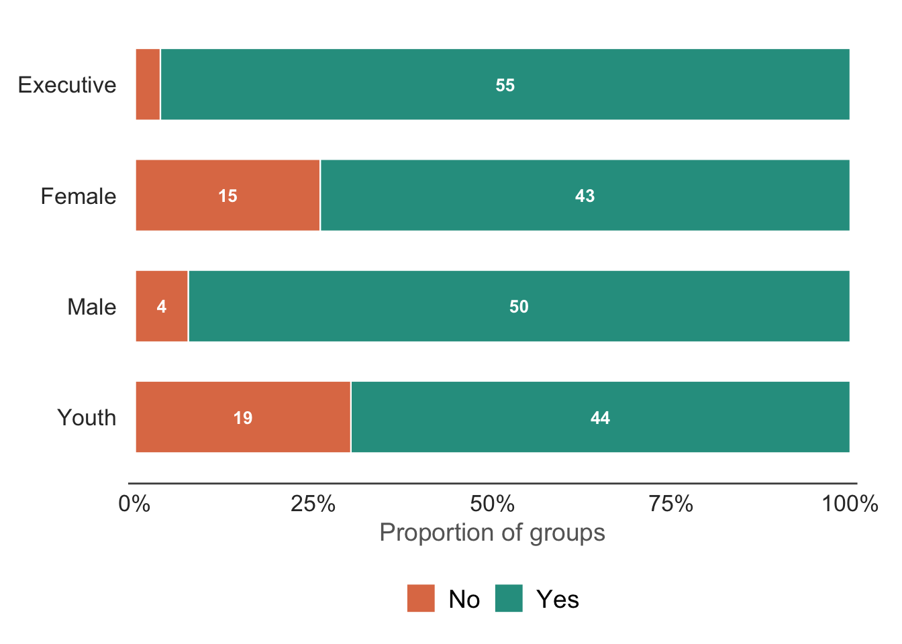

Code
cfmg |>
filter(interview_type != "individual_interview") |>
mutate(
response = economic_transformation_benefits_equity_across_groups,
response = case_match(response,
"yes" ~ "Yes",
"no" ~ "No",
.default = NA),
response = factor(response, levels = c("Yes", "No")),
interview_type = factor(
case_match(
interview_type,
"cfmg_executive" ~ "Executive",
"cfmg_female" ~ "Female",
"cfmg_male" ~ "Male",
"cfmg_youth" ~ "Youth"
),
levels = c("Youth", "Male", "Female", "Executive")
)
) |>
drop_na(response) |>
count(interview_type, response) |>
group_by(interview_type) |>
mutate(prop = n / sum(n)) |>
ungroup() |>
ggplot(aes(y = interview_type, x = prop, fill = response)) +
geom_col(width = 0.65, colour = "white", linewidth = 0.4) +
geom_text(
aes(label = ifelse(prop >= 0.05, n, "")),
position = position_stack(vjust = 0.5),
size = 3.5, fontface = "bold", colour = "white"
) +
scale_x_continuous(
labels = percent_format(accuracy = 1),
expand = expansion(mult = 0.01),
name = "Proportion of groups"
) +
scale_fill_manual(
values = c("Yes" = "#2A9D8F", "No" = "#E07B54"),
guide = guide_legend(reverse = TRUE)
) +
labs(y = NULL, fill = NULL) +
theme_minimal(base_size = 14) +
theme(
panel.grid.major.y = element_blank(),
panel.grid.minor = element_blank(),
panel.grid.major.x = element_blank(),
axis.line.x.bottom = element_line(colour = "grey30", linewidth = 0.5),
axis.text.y = element_text(size = rel(1.14), colour = "grey20"),
axis.text.x = element_text(size = rel(1.14), colour = "grey20"),
axis.title.x = element_text(size = rel(1), colour = "grey40"),
legend.position = "bottom",
legend.text = element_text(size = rel(1)),
plot.margin = margin(10, 25, 10, 10)
)